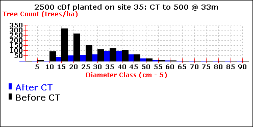

In this Topic Hide
Also see: Commercial Thinning in BatchTIPSY.
Commercial Thinning (CT) is only available for single-species stands of coastal Douglas-fir and interior lodgepole pine, which also have sufficient density at time of thinning to accommodate TIPSY's minimum CT residual densities.
TIPSY's Commercial Thinning (CT) settings are within the Comm. Thinning option in Stand Specifications.
The TASS thinning routine used to create TIPSY's CT yields attempts to mimic what an experienced operator might do when traversing the stand in a series of 5-m wide strips. The selection procedure is as follows:
Divide the stand into 5-m strips
Select the tree of largest DBH within the first 5 m of the first strip
Remove all trees within a fixed radius of the selected tree (e.g. 2.0 m for a residual density of 625 trees).
Select the next largest tree in the same 5-m square cell, and remove all trees within the same fixed radius from this tree
Continue until no more trees are removed or retained in the cell
Proceed to the second 5-m square cell in the strip and repeat the process
Continue until the entire stand has been treated
Compare the actual with the requested residual density
Increase or decrease the radius of the surround (2.0 m +/-) and repeat the thinning
Continue adjusting the radius until the target residual density is achieved
This process ensures that most of the largest trees will be retained and the majority of the smaller trees removed. Thus, the average diameter of the stand increases in relation to the intensity of thinning. If two big trees are growing close together, the smaller will be harvested – even if it is among the best in the stand.
The graph below illustrates the impact of commercial thinning on diameter distribution. In this example, (2500 planted Fdc thinned to 500/ha at a height of 33 m), the average diameter increases from 26.8 to 34.7 cm while the diameter of the prime trees decreases very slightly.

The prime trees are mostly in the 40- to 65- cm DBH classes with about 50 coming from the 35-cm class. Consequently, those trees removed from the 40- and 45-cm classes, and the upper portion of the 35-cm class will affect the average diameter of the prime trees. The impact on crop trees will depend on the number selected. See Crop Trees and Prime Trees for more information.
The Preferences menu lets you chose the CT information displayed in yield tables:
Display CT Values, displays a single line at the bottom of the yield table summarizing CT harvest removals
CT pre/post data: displays two lines at the bottom of the yield table describing the stand immediately before and after CT.
Both options appear in the example below, created with TIPSY 3.0.
MANAGED STAND YIELD TABLE |
Volume (m3/ha) and MAI |
All Trees 0.0+ |
250 Prime 12.5+ |
Top |
|
|
|
Age |
Ht |
Gross |
Merch |
BA |
DBHg |
TREES |
CC |
M Vol |
DBHg |
LC |
| ----------------------------------------------------------------------------------------------------------------------------------------- |
0.0 |
0.0 |
0 |
0 |
0.00 |
0 |
0.0 |
2500 |
0 |
0 |
0.0 |
0 |
20.0 |
12.4 |
105 |
50 |
2.50 |
22 |
|
2212 |
99 |
22 |
16.2 |
68 |
40.0 |
26.8 |
518 |
455 |
11.38 |
58 |
21.3 |
1629 |
100 |
206 |
33.6 |
42 |
52.0 |
33.0 |
765 |
686 |
13.19 |
72 |
26.8 |
1270 |
100 |
379 |
42.0 |
39 |
52.0 |
33.0 |
765 |
493 |
13.19 |
47 |
34.7 |
500 |
86 |
373 |
41.8 |
39 |
60.0 |
36.4 |
912 |
633 |
13.77 |
56 |
38.5 |
485 |
97 |
498 |
46.4 |
38 |
80.0 |
43.3 |
1240 |
951 |
14.30 |
74 |
45.6 |
455 |
100 |
781 |
54.5 |
33 |
100.0 |
48.4 |
1515 |
1203 |
13.96 |
86 |
52.3 |
400 |
100 |
1031 |
60.2 |
31 |
| ---------------------------------------------------------------------------------------------------------------------------------------- |
Commercial Thinning Harvest |
52.0 |
33.0 |
|
193 |
|
24 |
20.0 |
770 |
|
|
|
| -------------------------------------------------------------------------------------------------------------------------------------- |
The Commercial Thinning Harvest values in the last line of the table are differences, except for DBHg which gives the quadratic mean diameter of the thinned trees (diameter of the tree of average basal area).
The calculation of MAI is based on the merchantable volume of the standing and commercially thinned trees. In the example above, the 193 m3 (12.5+) harvested at age 52 is added to the standing volume at each age before TIPSY calculates the MAI [e.g. MAI @100 yrs = (1203 + 193)/100 = 13.96]. Consequently, the MAI is identical immediately before and after the harvest entry. MAI’s would almost certainly culminate immediately before the commercial entry if thinnings were excluded. This is meaningless from the perspective of maximizing harvest yield.
The best way to see the impact of commercial thinning is to plot the data. Be sure you have selected the CT pre/post data option available from the Preferences menu, then plot yield/age relationships, stand and stock tables and other variables. The graph for the example above overlays the number of trees by diameter class immediately before and after commercial thinning.
Not all tables display a CT harvest summary. The Mortality, Snag, and Coarse Woody Debris tables do not, although the effects of commercial thinning are incorporated into the tables.
In order to achieve the additional volume growth generated by genetic gain and/or fertilization, TIPSY accelerates height growth. This method of implementing genetic gain or fertilizer is complicated by the sharp decline in standing volume after commercial thinning.
Minor anomalies can occur when commercial thinning is applied to stands with complex prescriptions. Examples are stands with multiple fertilizer applications or stands that were regenerated with improved planting stock and have one or more fertilizer applications. Under these conditions, the reported percentage gain in periodic growth of fertilized stands might not coincide with the percentage you have specified, or even the percentage identified in the table header.
Incremental gains can vary by up to three percent when fertilizer is applied after the stand is commercially thinned. However, volume growth in this period is low due to the age of the stand and the reduced number of trees. As a result, these differences are largely inconsequential relative to total volume production.
TIPSY treats commercial thinning as an early harvest entry. It is not viewed as a silvicultural treatment (even though it appears in TIPSY with silviculture treatment options) because the purpose of most commercial entries in BC is to alter the flow of timber over time, from a wood supply perspective. A single moderate to heavy entry close to the rotation age will move wood forward in the harvesting queue, but it will almost certainly reduce the total harvest volume (thinning volume + final harvest). A series of frequent light entries, on the other hand, might increase the total yield, but this regime is rarely practised in BC, and is not an option in TIPSY.
Yes, by exporting TIPSY output to FAN$IER. Remember that TIPSY treats commercial thinning as an early harvest entry, which alters the flow of wood. FAN$IER alters the timing and magnitude of costs and revenues accordingly. Log/lumber revenue from commercial thinning is incorporated into FAN$IER economic analysis along with the revenue from the final harvest. The value per cubic metre or board foot is the same for all harvests.